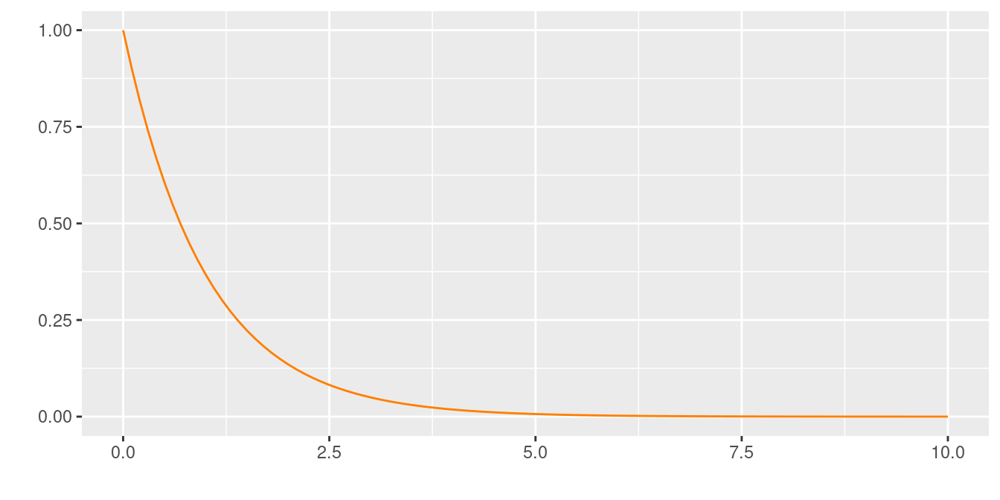

Teorema del Límite Central
Métodos y Simulación Estadística
Teorema central del límite:
Si \(\bar{X}\) es la media de una muestra de tamaño \(n\) tomada una población con media \(\mu\) y varianza \(\sigma^{2}\), entonces la forma límite de la distribución de : \[Z=\dfrac{\bar{X}-\mu}{\Big(\sigma/\sqrt{n}\Big)} \sim N(0,1) \]
conforme \(n\rightarrow \infty\), esta aproximación es cada vez más próxima a la normal. Este teorema es aplicable tambien a la variable total de sumatoria de los valores de la muestra \(T_{n}=X_{1}+X_{2}+...+X_{n}\)

El potencial de este teorema esta en que no importa la distribución de la variable X, la distribución de la media provemiente de la muestra tomada de esta población se distribuye aproximadamente normal. Al final de la guía se encuentra practica computacional que nos ayuda a comprender el alcance de este teorema.
Verificación del Teorema central del límite
par(cex=0.5, cex.axis=.5, cex.lab=.5, cex.main=.5, cex.sub=.5, mfrow=c(3,2), mai = c(.5, .5, .5, .5))
# Teorema Central del Límite-----------------------------
n=1000 # numero de columnas (tamaño máximo de muestra)
m=1000*n
# Caso --------------------------------------------------
# distribución exponencial-------------------------------
X=matrix(rexp(m,1),ncol=n)
# generación de muestras-------------
X1=X[ ,1] # n=1
X2=X[ ,1:2] # n=2
X20=X[ ,1:20] # n=20
X30=X[ ,1:30] # n=30
X50=X[ ,1:50] # n=50
X100=X[ ,1:100] # n=100
X1000=X[ ,1:1000] # n=1000
# generacion de medias---------------
Mx2=apply(X2,1,mean) # medias de muestras de tamaño n=2
Mx20=apply(X20,1,mean) # medias de muestras de tamaño n=20
Mx30=apply(X30,1,mean) # medias de muestras de tamaño n=30
Mx50=apply(X50,1,mean) # medias de muestras de tamaño n=50
Mx100=apply(X100,1,mean) # medias de muestras de tamaño n=100
Mx1000=apply(X1000,1,mean) # medias de muestras de tamaño n=1000
# generación de densidad empírica --
d=density(X1)
d2=density(Mx2)
#d20=density(Mx20)
d30=density(Mx30)
d50=density(Mx50)
d100=density(Mx100)
d1000=density(Mx1000)
# Gráficos de densidad -------------------------------
# histogramas de comparacion-------------------------
plot(d, main=" ", xlab = "n=1")
plot(d2,main=" ", xlab = "n=2")
#plot(d20, main="", xlab = "n=20")
plot(d30, main=" ", xlab = "n=30")
plot(d50, main=" ", xlab = "n=50")
plot(d100, main=" ", xlab = "n=100")
plot(d1000,main=" ", xlab="n=1000")
# histogramas de comparacion--------------------------
hist(X1, main = "n=1", freq=FALSE)
hist(Mx2, main ="n=2", freq=FALSE)
# hist(Mx20, main = "n=20",freq=FALSE)
hist(Mx30, main = "n=30",freq=FALSE)
hist(Mx50, main = "n=50",freq=FALSE)
hist(Mx100, main = "n=100", freq=FALSE)
hist(Mx1000, main = "n=1000", freq = FALSE) 
# histogramas de comparacion--------------------------
qqnorm(X1) ; qqline(X1, col="red")
qqnorm(Mx2) ; qqline(Mx2, col="red")
# qqnorm(Mx20) ; qqline(Mx20, col="red")
qqnorm(Mx30) ; qqline(Mx30, col="red")
qqnorm(Mx50) ; qqline(Mx50, col="red")
qqnorm(Mx100) ; qqline(Mx100, col="red")
qqnorm(Mx1000) ; qqline(Mx1000, col="red")
Se puede notar la transformación de la distribución de la media a una distribución normal a medida que el tamaño de muestra aumenta
```